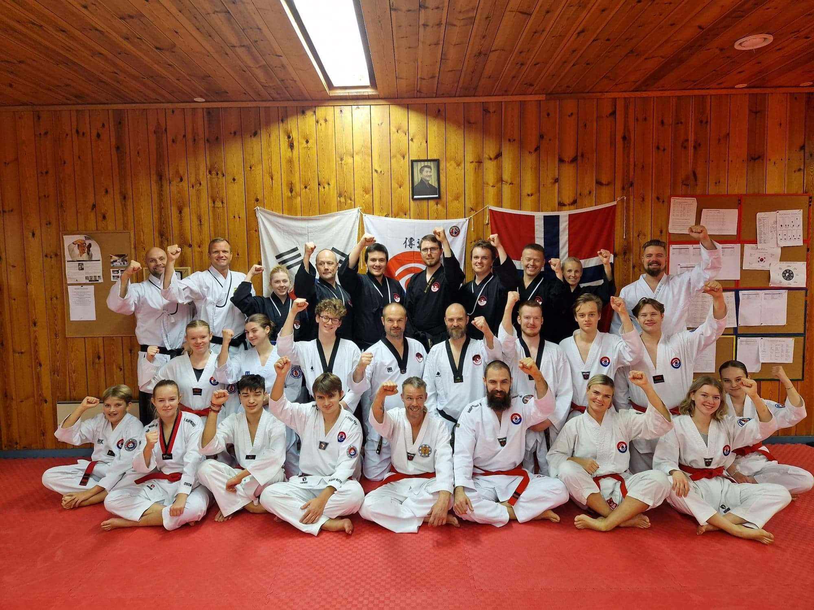

Innlegg
Bra oppmøte på Dan-seminaret til Evje

Helgen 28-30. oktober deltok flere av klubbens medlemmer på Dan-seminar hos Evje Taekwondo Klubb! Dan-seminar er åpent for alle med rødt belte og oppover, og er som en forbedring til Dan-gradering.
I klubben har vi flere 1. og 2. dan kandidater, og alle disse tok styrke- og teoriprøve, og bestod dette med glans - gratulerer!
Det var en læringsrik helg med mange gode minner. Saebomnim Eirik og Lars var trenere, og treningene ble ofte delt i en gruppe med rød-belter og en gruppe med svart-belter.
I løpet av helgen var det treninger med fokus på pensum til gradering, og det ble derfor mange treninger med mye pensum som skulle gjennomgås, men det var absolutt verdt det!
I tillegg hadde Evje Taekwondo Klubb 25-års jubileum, så dette ble feiret med en hyggelig jubileumsmiddag lørdag kveld med en rekke gjester som blant annet Grandmaster Cho, Master Anna og ordføreren i Evje og Hornes kommune. Det ble mange hyggelige taler, og mens de voksne fortsatte festen utover kvelden, trakk ungdommen seg tilbake til hovedsetet for leiren og hadde en hyggelig og sosial kveld.
Jeg vil anbefale alle som kan og vil til å bli med neste gang, for dette var veldig gøy! I tillegg blir du kjent med flere fra andre klubber, og lærer masse nyttig til gradering.